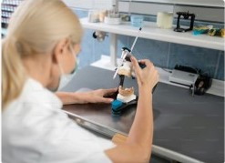
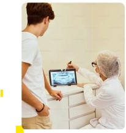
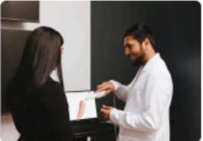
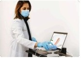

مختبر الأسنان الرقمي
مع التواصل في الوقت
الحقيقي
نحن نعمل على تمكين الآلاف من عيادات طب الأسنان من خلال تدفقات عمل مبتكرة لتعزيز رعاية المرضى وإحداث ثورة في طريقة تقديم طلباتهم والتعاون في العمل المختبري.
الآلاف من الممارسات تثق في لازورد في أعمالها المخبرية
تعزيز مستقبل طب الأسنان الرقمي
لا يمكن تحقيق ترميمات متسقة وملاءمة إلا من خلال التواصل القوي. في لازورد، قمنا بتطوير طرق مبتكرة للتعاون مع أطباء الأسنان لدينا باستخدام قوة التكنولوجيا.
سير العمل التعاوني
احصل على مراجعة المسح في الوقت الفعلي واعتمد تصاميم الأسنان المعقدة ثلاثية الأبعاد للإعداد النهائي في عملك المختبري.
المنتجات المبتكرة
قم بتقديم خدمات تغير قواعد اللعبة مثل التيجان لمدة 5 أيام، وأطقم الأسنان ذات الموعد المباشرة، والأجزاء الجزئية المباشرة.
مختبر رقمي بالكامل
يمكنك الوصول إلى فنيين ذوي المستوى العالمي الذين يستجيبون بأحدث تقنيات طب الأسنان وأوقات التسليم الرائدة في الصناعة.
الخبرة عند الطلب
يمكنك الوصول إلى خبرائنا السريريين للحصول على إرشادات ودعم متخصصين عبر الهاتف أو البريد الإلكتروني خلال دقائق.

قم بتحويل ممارساتك باستخدام سير عمل رقمي مثبت
استمتع بمستوى من التحكم لم يكن ممكناً من قبل.
- ✓ المسح الضوئي بدقة وثقة
- ✓ اطلب العمل المختبري باستخدام الوصفات الطبية الرقمية
- ✓ الموافقة على التصاميم الرقمية قبل التصنيع
- ✓ تتبع الحالات في الوقت الفعلي
- ✓ تسليم العلاج للمريض في أيام
- ✓ كيف يتم مقارنة لازورد مع مختبرات الأسنان الأخرى
تحقيق نتائج أفضل لممارستك ومرضاك

تطوير مهارات كل عضو من الموظفين
احمل كل عضو من أعضاء فريقك بثقة على سير عمل رقمي — استفد من التدريب غير المحدود لفريقك كلما دعت الحاجة.
تحسين تجربة المريض
ارفع مستوى رعاية المريض من خلال ابتكارات مثل أطقم الأسنان ذات الموعد المباشرة، والأجزاء الجزئية المباشرة، والمسح الضوئي الترميمي.

زيادة القدرة على التنبؤ بالعلاج
استخدم أدوات المسح المتقدمة — تصور التصاميم الرقمية والموافقة عليها، وتعزيز قبول الحالة، وتقديم نتائج ناجحة للمرضى.